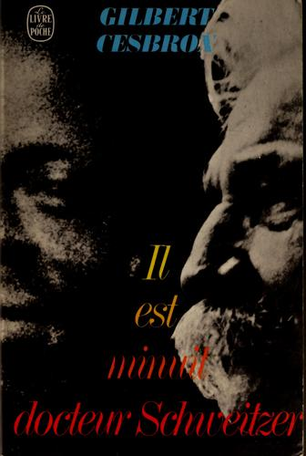
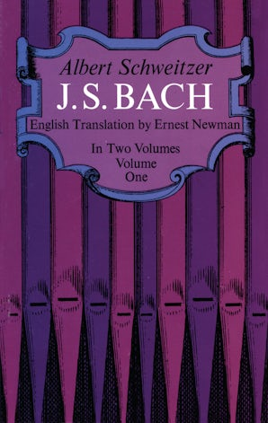
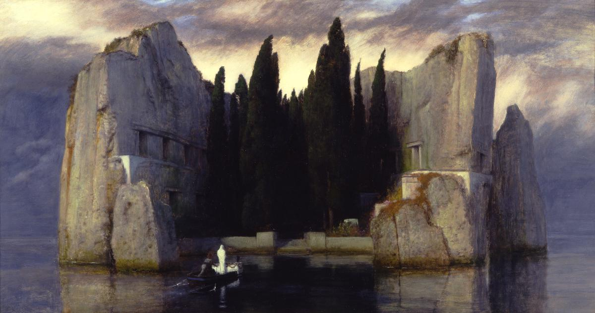
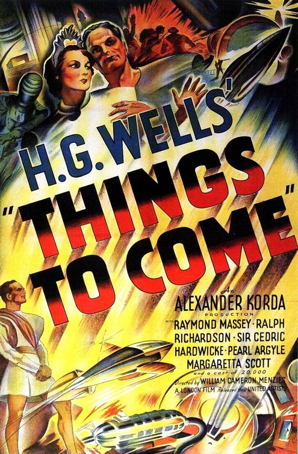

1:01:45 · 13 OPERE
Albert Schweitzer: il pensiero necessario.
Il filo del discorso
Il contributo presenta il primo volume della Kulturphilosophie di Albert Schweitzer, Verfall und Wiederaufbau der Kultur, noto in italiano come Agonia della civiltà. Il relatore ne lamenta la scarsa circolazione e interroga il destino di un pensiero che considera decisivo per il presente. L’apertura del libro guida il ragionamento: la guerra viene letta come manifestazione di una crisi già maturata e la filosofia è chiamata a rispondere della perdita di un orientamento etico della cultura.
Leggi la sintesi completaRiduci la sintesi
Il tema centrale è la distinzione fra crescita dei mezzi tecnici e miglioramento della vita. Una lunga parentesi biografica mostra come il relatore legga insieme pensiero e azione: teologia, musica e lavoro medico diventano dimensioni di una stessa responsabilità. Il libro su Bach, l’ospedale di Lambaréné e il dramma di Cesbron introducono il conflitto fra coscienza individuale, istituzioni e obbedienza. La vita di Schweitzer non viene trattata dalla scheda come un racconto privo di problemi: cronologia degli studi e dell’internamento, contesto coloniale e aneddoti sono distinti dal significato che il relatore attribuisce loro. La reverenza per la vita sostiene il passaggio alla critica del progresso assunto come fine in sé. Secondo il relatore, civiltà ed etica si sono separate quando efficienza, potenza economica e capacità di distruzione hanno sostituito la domanda sui fini. La critica si estende al linguaggio e al conformismo, con richiami a Orwell, Eliot, Fromm, alla caverna platonica e al Mago di Oz. Queste opere offrono immagini della perdita e della riconquista del giudizio: un individuo può tornare a partecipare alla società quando smette di agire soltanto come ingranaggio. Le analogie politiche restano interpretazioni dell’autore, senza diventare equivalenze storiche o diagnosi cliniche. L’ultima parte collega la filosofia di Schweitzer all’impegno contro gli esperimenti nucleari e alla possibilità della cultura di incidere sulla vita pubblica. La scheda distingue moratorie e trattato del 1963, oltre a chiarire la natura delle fasce di radiazione terrestri. La biografia di James Brabazon riapre infine il problema della ricezione postuma: la presunta influenza della CIA è riferita dal relatore come ipotesi non confermata e rimane tale. La conclusione ricongiunge lettura, autonomia e azione: la necessità di pensare è presentata come pratica di responsabilità verso gli altri esseri viventi.
I libri nel discorso

The Decay and Restoration of Civilization
Note sul riferimento
Copertina della raccolta: Prometheus · The Philosophy of Civilization · 1987 · raccolta in inglese
Copertina della raccolta Prometheus del 1987 che contiene The Decay and Restoration of Civilization e Civilization and Ethics. I due saggi, originariamente distinti, restano voci separate. L’edizione in inglese dell’immagine non è attribuita al video.
Titolo tedesco Verfall und Wiederaufbau der Kultur, reso foneticamente nella trascrizione automatica, spiegato come declino e ricostruzione della cultura/civiltà. È la prima parte della Kulturphilosophie del 1923; l’edizione italiana ricordata è Agonia della civiltà, non una nuova opera.
Civilization and Ethics (Kultur und Ethik)
Note sul riferimento
Copertina della raccolta: Prometheus · The Philosophy of Civilization · 1987 · raccolta in inglese
Copertina della raccolta Prometheus del 1987 che contiene The Decay and Restoration of Civilization e Civilization and Ethics. I due saggi, originariamente distinti, restano voci separate. L’edizione in inglese dell’immagine non è attribuita al video.
È nominata la seconda parte, etica e cultura, distinguendola dal saggio discusso principalmente. Il titolo è Kultur und Ethik.

Il est minuit, docteur Schweitzer (È mezzanotte, dottor Schweitzer)
Note sul riferimento
Copertina: Le Livre de Poche · edizione catalogata 1982 · ISBN 9782253005735
Copertina autentica acquisita dal repertorio OpenLibrary per l’ISBN del volume catalogato. L’immagine rappresenta il testo teatrale in francese, non la raccolta completa del 1952 né il successivo film. Nessuna edizione è confermata nel video.
Il relatore dichiara che è un testo teatrale e ne pronuncia il titolo italiano; autore e titolo originale sono riscontrati negli archivi teatrali e accademici.

Noi figli di Eichmann. Lettera aperta a Klaus Eichmann
Note sul riferimento
Copertina: Giuntina, 1995, traduzione di Antonio G. Saluzzi.
Immagine autentica dell’opera, controllata visivamente; l’edizione di riferimento non è attribuita al filmato.
Titolo tedesco Wir Eichmannsöhne, tradotto dal relatore come i figli di Eichmann, attribuito a Günther Anders. Si tratta della lettera aperta a Klaus Eichmann.

Johann Sebastian Bach (J. S. Bach)
Identificazione probabile
Note sul riferimento
Copertina Dover: primo volume di J. S. Bach: Dover Publications · traduzione Ernest Newman · primo di due volumi
Copertina autentica di J. S. Bach, Volume One, ISBN 9780486216317. La monografia inglese è in due volumi e l’immagine rappresenta solo il primo. Nessuna edizione, lingua o versione è confermata come quella richiamata nel video.
Libro di Schweitzer su Bach e suo carattere interpretativo. L’identificazione riguarda la monografia; testo francese, ampliamento tedesco, lingua ed edizione non sono determinabili dal parlato.

Anatomia della distruttività umana
Identificazione probabile
Note sul riferimento
Copertina: Mondadori · Oscar saggi · 1992
Copertina autentica dell’edizione di riferimento, controllata visivamente. Non identifica l’esemplare letto o citato nel video.
Fromm è richiamato per la lettura di Hitler come personalità necrofila: probabile rimando alla trattazione in Anatomia della distruttività umana, senza titolo annunciato né edizione identificata.

L’isola dei morti (Die Toteninsel)
Note sul riferimento
Dipinto di Böcklin: versione berlinese del 1883: Alte Nationalgalerie, Berlino · versione 1883 · inventario NG 2/80
Riproduzione integrale autentica del dipinto della Alte Nationalgalerie: foto Staatliche Museen zu Berlin / Andres Kilger, Public Domain Mark 1.0 nel catalogo. Esistono più versioni del motivo; quella del 1883 è dichiarata e non viene presentata come versione precisata nel parlato.
Titolo L’isola dei morti e pittore riconoscibile come Böcklin, evocati a proposito di Hitler. Il museo documenta una versione proveniente dalla Cancelleria; il valore psicologico del richiamo non è una diagnosi accertata.

1984
Identificazione probabile
Note sul riferimento
Copertina: Newton Compton · edizione illustrativa
Il riferimento a O’Brien, al Grande Fratello e allo svuotamento della persona identifica il romanzo 1984; non si converte il richiamo al linguaggio in una citazione di un saggio orwelliano non nominato.

The Hollow Men (Gli uomini vuoti)
Note sul riferimento
Copertina della raccolta Poesie che contiene Gli uomini vuoti: Bompiani · Poesie · 2000 · a cura e traduzione di Roberto Sanesi
La copertina rappresenta Poesie di Eliot a cura di Roberto Sanesi. L’inclusione di Gli uomini vuoti è documentata dal catalogo e dall’articolo dell’editore. Non si presenta il titolo della poesia come un volume autonomo né si attribuisce questa traduzione alla lettura estemporanea del relatore.
Eliot, Gli uomini vuoti e la data 1925 sono pronunciati; il titolo inglese della poesia è The Hollow Men, plurale.

Things to Come (La vita futura)
Note sul riferimento
Locandina del film Things to Come, 1936: Film 1936 · locandina cinematografica in lingua inglese
Locandina autentica del film, con autori e cast leggibili. È materiale promozionale cinematografico, non una copertina libraria o un’immagine generata. Versione della locandina non identificata come quella eventualmente mostrata nel video.
Wells e Things to Come, reso foneticamente dalla trascrizione automatica, sono richiamati a proposito della resistenza al progresso: identificato il film, non il romanzo con titolo diverso.

La Repubblica
Identificazione probabile
Note sul riferimento
Copertina: Laterza · La Repubblica · edizione con testo a fronte di riferimento
Immagine associata all’ISBN di riferimento e controllata visivamente; edizione e traduzione non identificate come quelle citate o lette nel video.
Il mito della caverna, le catene e l’uscita alla luce rimandano probabilmente al libro VII della Repubblica. Nessuna edizione è specificata.

Il mago di Oz / The Wizard of Oz
Note sul riferimento
Immagine ufficiale Warner · edizione 4K del film del 1939: Film MGM,1939, con Judy Garland; la scheda Warner reca25 agosto 1939. Immagine promozionale ufficiale della distribuzione4K attuale, non una stampa originale della prima uscita e non copertina del romanzo del 1900.
Keyart contemporaneo della versione4K, proveniente dalla scheda Warner Bros. Non datato come poster originale 1939 e non attribuito alla specifica scena dietro la tenda.
La scena dell’uomo dietro la tenda e la frase inglese sono riferimenti al film Il mago di Oz; non assegnati automaticamente al romanzo di Baum.

Albert Schweitzer: A Biography
Identificazione probabile
Note sul riferimento
Copertina: Syracuse University Press · seconda edizione · ISBN 9780815606758
Copertina autentica della seconda edizione proposta dall’editore, con la dicitura Second Edition visibile. L’esemplare usato dal relatore non è accertato.
James Brabazon è nominato come biografo di Schweitzer. Il titolo è identificato tramite il catalogo dell’editore; la versione e il passo sulla CIA non sono verificati da un estratto del libro.